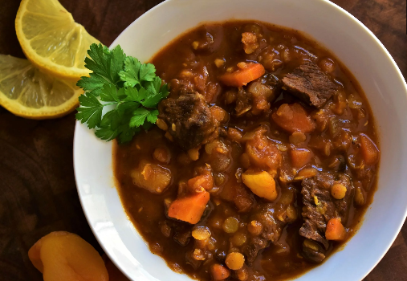

Beef and Lentil Stew
Home

A beautiful bowl of Beef and Lentil stew
Here’s a different beef mince recipe idea for you – a hearty Beef & Lentil Soup with vegetables! Adapted from my Best Ever Lentil Soup with the addition of ground beef and Moroccan-inspired spicing for extra tastiness, lentil soups can be so boring … but not this one!
Healthy, hearty, economical and a complete dinner made in one pot. Yessss…..
Ingredients
- Ground beef
- Dried lentils
- Onion
- Garlic
- Beef stock
- Canned tomato
- Vegetables
How to make Beef and Lentil stew!
- Mix the spices in a bowl first – We’re going to use some to brown the beef, and some to flavour the soup broth;
- Cook onion, beef – Sauté the onion and garlic (essential flavour base!) then brown the beef, breaking it up as you go (flat edge wooden spatula makes short work of this);
- Brown beef with spices – Add some of the spices and cook it with the beef. Here we add a ton of extra flavour into this soup, so cook off those spices well! Have a nibble and make sure it’s tasty, then tweak as needed. Some of the flavour will seep into the soup, but most stays on the beef;
- Add everything else – Add the vegetables that can sustain a 25 minute simmer along with all the broth ingredients (tomato, beef stock, water, remaining spices) and give it big stir;
- immer for 25 – 30 minutes for the lentils to soften and tomato to break down so it thickens the sauce. TIP: Older dried lentils take longer to cook, so really old ones might take 35 minutes. Add the faster-cooking vegetables partway through, and based on how long they take to cook. I added the diced zucchini and green beans after 15 minutes – so they cooked for 10 minutes. This was more than sufficient to cook them through until soft and to soak up broth flavour; and
- Serve! Because I went for a Moroccan flavour for the base recipe, I finished with a dollop of yogurt and some fresh coriander. I will pop a list of suggested finishes for other spice mix combinations in the recipe card.